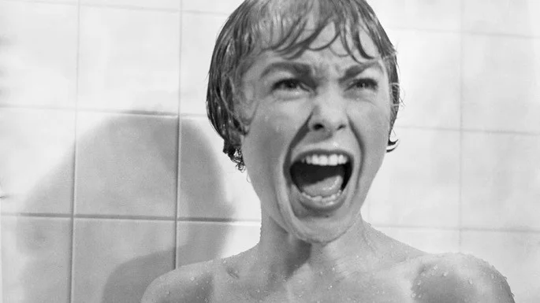

Filmes clássicos que você precisa ver (pelo menos uma vez)
Existem histórias que parecem ser mais fortes que o próprio tempo e filmes que se tornam ainda mais populares com a passagem dos anos.
Abaixo, selecionamos vários filmes antigos e inesquecíveis que foram marcantes na época do seu lançamento e, atualmente, continuam conquistando admiradores pelo mundo inteiro.
Verdadeiras referências entre os vários gêneros (do drama ao romance, passando pelo terror e o suspense), estes títulos têm sido apontados entre os maiores da história do cinema.
1. Casablanca (1942)
Considerado um dos maiores filmes de amor de todos os tempos, Casablanca é um verdadeiro clássico do cinema norte-americano dirigido por Michael Curtiz.
Passado na cidade de Casablanca, em Marrocos, durante a Segunda Guerra Mundial, o filme acompanha o reencontro de Rick e Ilsa, antigos amantes que voltam a se cruzar em circunstâncias peculiares. Mesmo envoltos num clima de perigo e clandestinidade, os dois reacendem uma paixão inesquecível.
O Vento Levou (1939)
Considerado um dos filmes mais famosos do mundo, o drama histórico é passado no sul dos Estados Unidos, durante a Guerra Civil Americana, e foi dirigido por Victor Fleming, George Cukor e Sam Wood.
Em meio aos acontecimentos e fortes contrastes sociais, o longa-metragem acompanha o relacionamento conturbado de Scarlett O'Hara, que luta para manter a sua plantação de algodão, e Rhett Butler, um homem que está apaixonado por ela.
O Poderoso Chefão (1972)
Um dos filmes de gângster mais célebres da história, O Poderoso Chefão foi dirigido por Francis Ford Coppola. O longa-metragem retrata o submundo da máfia e é protagonizado pelo ator Marlon Brando, no papel de Don Vito Corleone.
No dia do casamento da filha, o patriarca da família está disposto a escutar os pedidos de quem precisa e a conceder alguns "favores".
O Mágico de Oz (1939)
O clássico de fantasia conquistou espectadores de inúmeras gerações e continua na lista dos nossos favoritos! A protagonista da história é Dorothy, uma garotinha do Kansas que é levada por um tornado até um lugar chamado Oz.
Acompanhada pelo cachorro, Totó, ela embarca numa grande aventura e vai conhecendo personagens curiosos como um espantalho, um leão e um homem de lata.
Uma Odisseia no Espaço (1968)
Para os apaixonados por ficção científica, ou mesmo para os curiosos, 2001 - Uma Odisseia no Espaço é um filme indispensável. O longa-metragem de Stanley Kubrick entrou para a história do cinema e ficou conhecido principalmente pelos efeitos visuais e trilha sonora arrebatadora.
Passada quase sempre no espaço, a narrativa se estende por séculos e trata temas como viagens espaciais, vida alienígena, evolução humana e inteligência artificial.
Hiroshima, Meu Amor (1959)
Fotografia em preto e branco de um casal num bar, bebendo cerveja, frente a frente O longa-metragem de drama e romance, com direção de Alain Resnais, é uma produção franco-japonesa inspirada no romance homônimo da escritora Marguerite Duras.
Considerada polêmica na época em que foi lançada, a obra se tornou bastante influente, sendo apontada como um marco da Nouvelle Vague. A protagonista da história é uma atriz francesa que está prestes a abandonar a cidade de Hiroshima.
Na última noite, ela se envolve com um homem japonês que é casado e passa a vaguear entre as suas memórias, lembrando de um antigo romance que viveu durante a guerra.
Carrie, a Estranha (1976)
Carrie no baile da escola, recebendo flores e uma faixa de rainha do baile.
Baseado num dos maiores sucessos de Stephen King, o filme de terror sobrenatural, dirigido por Brian De Palma, segue os passos de uma adolescente que frequenta o ensino médio. Carrie é rejeitada pelos seus colegas de escola e, em casa, vive numa atmosfera sufocante, por causa da sua mãe controladora.
De repente, tudo se altera quando a jovem descobre que tem poderes paranormais e consegue mexer objetos com a força da mente. A partir daí, ela tem a oportunidade de se vingar de todos aqueles que a machucaram no passado.
Psicose (1960)
Uma das obras-primas de Alfred Hitchcock, Psicose é um dos filmes de suspense mais icônicos de sempre, que acabou virando referência na cultura pop.
Marion Crane é uma mulher que cometeu um crime e precisa se esconder. É assim que ela vai parar no Motel Bates, um local remoto dirigido por um homem chamado Norman que tem uma relação muito estranha com a sua mãe.
Quando os crimes começam a surgir, o clima de tensão vão aumentando e você também vai querer descobrir o assassino
Sociedade dos Poetas Mortos (1989)
Professor dando aula de pé, em cima da mesa.
O emocionante drama norte-americano, dirigido por Peter Weir, marcou gerações. A trama conta a história de John Keating, um professor de inglês muito especial que começa a dar aulas num colégio só para meninos.
Desafiando as normas conservadoras do local, ele acaba formando grandes laços de amizade com os jovens, que o encaram como uma verdadeira inspiração.
Scarface (1983)
Homem vestido de preto, com expressão zangada.
Scarface é um drama policial que você precisa assistir pelo menos uma vez. A narrativa cinematográfica, dirigida por Brian De Palma, conta a história de Tony Montana.
O protagonista é um refugiado cubano que chega aos Estados Unidos e logo começa uma carreira no crime. Um homem ambicioso e extremamente violento, Tony consegue construir um verdadeiro império através do tráfico.
Dirty Dancing – Ritmo Quente (1987)
Um filme musical de romance que é a cara dos anos 80, Dirty Dancing foi dirigido por Emile Ardolino e é lembrado pelas suas frases lendárias, trilha sonora poderosa e coreografias impressionantes.
O longa-metragem segue o relacionamento proibido de Baby, uma adolescente, e Johnny, seu professor de dança.